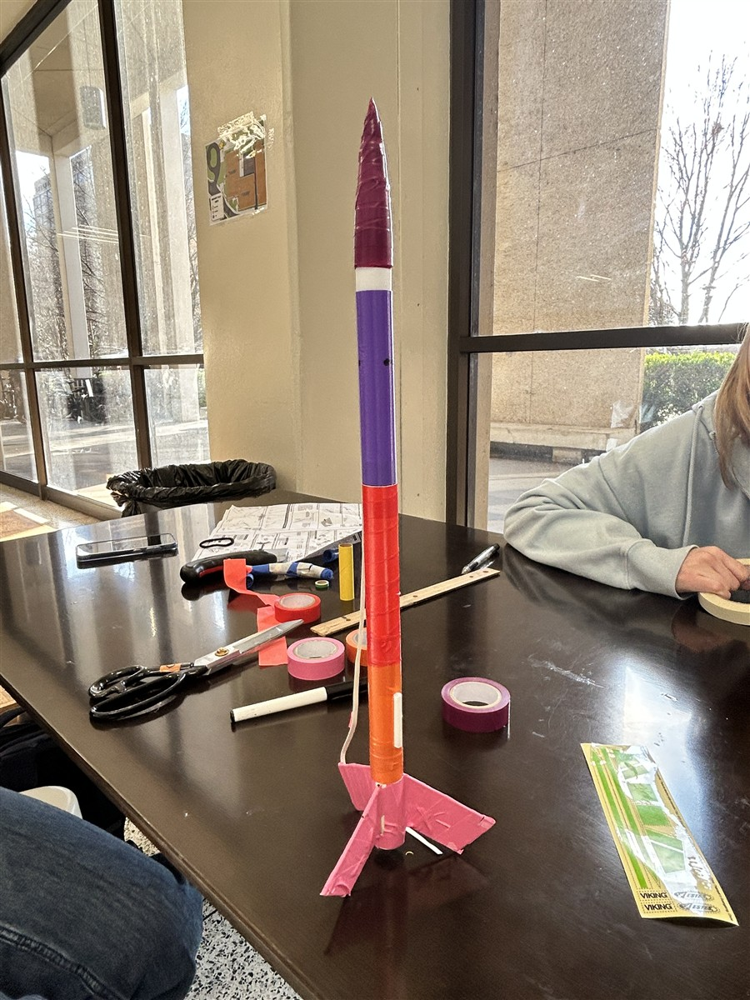

Georgia Institute of Technology BS Aerospace Engineering, 2027 MS Aerospace Engineering, 2028
BS/MS aerospace engineering student with experience across computational fluid dynamics,
structural analysis, model based systems engineering, CAD, and computing.
This portfolio presents selected work in simulation based aerospace design and analysis.
A staged ANSYS Fluent workflow that progressed from industry-provided baseline files through FGM, nonreacting LES, and a fully converged reacting LES case.
Final reacting LES temperature field on a longitudinal combustor plane. The elevated-temperature region follows the developing reaction zone from the injector into the chamber.
MESH SCALE19M cells
CASE CAMPAIGN8 cases
REACTING RUN20 steps
TIME STEP1 x 10-7 s
Building fidelity in stages
I reviewed the provided baseline files, rebuilt the chemistry and operating setup in ANSYS Fluent 2025 R2, and stabilized the FGM solution before moving to LES. The developed nonreacting flow and mixing field then became the starting point for the reacting case.
This staged approach preserved resolved flow structures while reaction was introduced through the FGM progress variable, rather than asking the turbulence and chemistry models to settle simultaneously.
Physics and operating setup
I configured hydrogen-air chemistry from the supplied CHEMKIN mechanism and generated the flamelet/PDF data required by Fluent's partially premixed FGM formulation. The setup used 627 K inlet streams and an operating pressure of 1,378,950 Pa.
The turbulence model was advanced from SST k-omega to LES with the WALE subgrid-scale model and a transient formulation.
01
Mesh, case progression, and reacting solution
Computational domain with the injector feeding the cylindrical combustor.Center-plane mesh used to inspect resolution and zone interfaces.Local refinement at the injector and chamber junction.
Developing the flowfield before reaction
The approximately 19 million cell mesh concentrated resolution around the small fuel passage and its intersection with the larger chamber. I checked the domain, zone assignments, connectivity, and local resolution before configuring combustion. The nonreacting FGM-LES case allowed the transient jet and chamber flow to develop while the progress variable remained zero, giving the reacting branch a stable baseline.
I built the final reacting case directly from the nonreacting LES solution and advanced it for 20 time steps at 1 x 10-7 s per step. The reacting field reached approximately 2,790 K, while the progress variable identified the reacted region and flame structure.
02
Wind Turbine Blade FSI
A steady state, one way fluid-structure interaction analysis connecting the surrounding airflow to blade pressure loading and structural response.
Pressure distribution from the converged Fluent solution. This distributed aerodynamic surface load becomes the input to the structural model.
Defining the aerodynamic model
The roughly 43 m blade transitions from a cylindrical root into S818, S825, and S826 airfoil sections, with spanwise twist and a 4-degree pitch angle at the tip. Threefold periodicity allowed one third of the rotor domain to represent the complete system.
A 12 m/s inlet and 2.22 rad/s rotational speed produce a tip-speed ratio near 8. I used a rotating reference frame with the SST k-omega turbulence model, a pressure outlet, no slip blade walls, and periodic side faces.
Checking the CFD solution
I monitored convergence, mass balance, pressure behavior, and mesh refinement before transferring loads. The simulated blade-tip velocity was 98.05 m/s compared with 98.12 m/s from the hand calculation.
Three-dimensional flow response around the rotating blade.
INLET SPEED12 m/s
CFD TIP VELOCITY98.05 m/s
HAND CALCULATION98.12 m/s
02
Load transfer and structural verification
The Fluent solution supplies the spatially varying pressure field used by the downstream Mechanical model.
Preserving the aerodynamic load path
The Workbench connection imported the pressure calculated on the wetted blade surfaces directly as a structural pressure load. Because structural deformation was not returned to the fluid model, the workflow remained a one-way coupling.
Building the structural representation
I modeled an orthotropic composite outer shell and internal spar with spanwise thickness variation. The Mechanical setup combined the composite properties, rotational velocity, fixed root, and imported aerodynamic pressure.
Total deformation under rotational and aerodynamic loading.Equivalent stress used to identify highly loaded regions.
ANSYS ROOT RADIAL FORCE1,578.1 kN
HAND CALCULATION1,576.3 kN
DIFFERENCEabout 0.1%
The mesh refinement study also showed that the baseline CFD mesh was not fully mesh independent for power prediction, reinforcing the need to verify numerical convergence rather than rely only on smooth contours.
03
Mars Rover Mobility Modeling
An executable SysML representation of the Opportunity Rover mobility subsystem, connecting architecture, engineering constraints, parametric simulation, and system-level feasibility.
Full block definition diagram showing six major rover subsystems and their relationships.
My responsibility: mobility
I developed the mobility block in MagicDraw, assigned value properties and units, and modeled the relationships needed to determine whether the rover could move across Martian terrain while satisfying torque, traction, speed, power, and climb constraints.
TorqueT = Fr
TractionFmax = mu mg cos(theta)
Speedv = omega r
PowerP = eta T(v/r)
Climb limitthetamax = atan(mu)
Bound variables propagate through torque, traction, power, speed, and climb relationships.
SPEED0.50 m/s
TORQUE12 N m
POWER21.6 W
TRACTION387.2 N
MAX CLIMBabout 31 deg
04
Unified Aerodynamic Analysis Tool
A MATLAB solver for a two dimensional double wedge airfoil that selects a valid model by Mach regime, calculates aerodynamic coefficients, runs parametric studies, and searches for an efficient design.
Design search at Mach 1.52. Detached-shock cases were rejected automatically.
One workflow, regime-appropriate physics
Subsonic, M < 0.8 Linearized thin airfoil theory with Prandtl-Glauert compressibility correction.
Transonic, 0.8-1.2 The solver stops rather than returning a result outside model validity.
Supersonic, M > 1.2 Panel-by-panel shock expansion theory using oblique shocks and Prandtl-Meyer expansions.
Lift response below and above Mach 1.Panel pressure coefficients for the Mach 2 reference case.Wave drag rises sharply as wedge half-angle increases.Optimized double-wedge geometry at the selected design point.
Engineering decision
At Mach 2 and 2 degrees angle of attack, increasing wedge half angle from 2 to 10 degrees raised lift coefficient from 0.08082 to 0.08545, while wave drag coefficient increased from 0.00565 to 0.07604. L/D fell from 14.3 to 1.12, making thickness the dominant variable in the final search.
05-13
Additional projects

05
Payload-Integrated Rocket
Designed and revised a 3D printed altimeter payload bay, supported manufacturing, and flight tested the rocket to 119 ft against a 125 ft target.
06
BallHawk Mechanical Design
Developed a multi component robot chassis and drivetrain through iterative SolidWorks modeling, geometry refinement, and assembly integration.
07
Urban Drone Delivery MBSE
Built a traceable SysML model connecting mission requirements, UAV architecture, operating behavior, performance equations, and scenario based feasibility.
08
Stellar Flare Activity
Analyzed TESS light curves from the Hyades cluster and built flare frequency distributions to compare activity across cadence and Gaia BP-RP color.
09
Reduced-Scale Wind Tunnel Design
Designed reduced scale test conditions using Reynoldsnumber similarity to reproduce full scale aerodynamic behavior within facility operating constraints.
10
CAD Evaluation & AI Training Work
Authored detailed CAD tasks and rubrics, then evaluated models for dimensional accuracy, feature quality, completeness, and instruction following.
11
Formula SAE Front & Rear Wing Aerodynamics
Designed and CFD validated aerodynamic assemblies across ride height and angle of attack configurations.
12
Mars Drone CFD Study
Investigated rotor performance in Earth and Mars atmospheric conditions through a large CFD simulation campaign.
13
CubeSat Structure & Attitude Control
Combined spacecraft structural design and FEA with a MATLAB/Simulink reaction wheel model for three axis attitude stabilization.